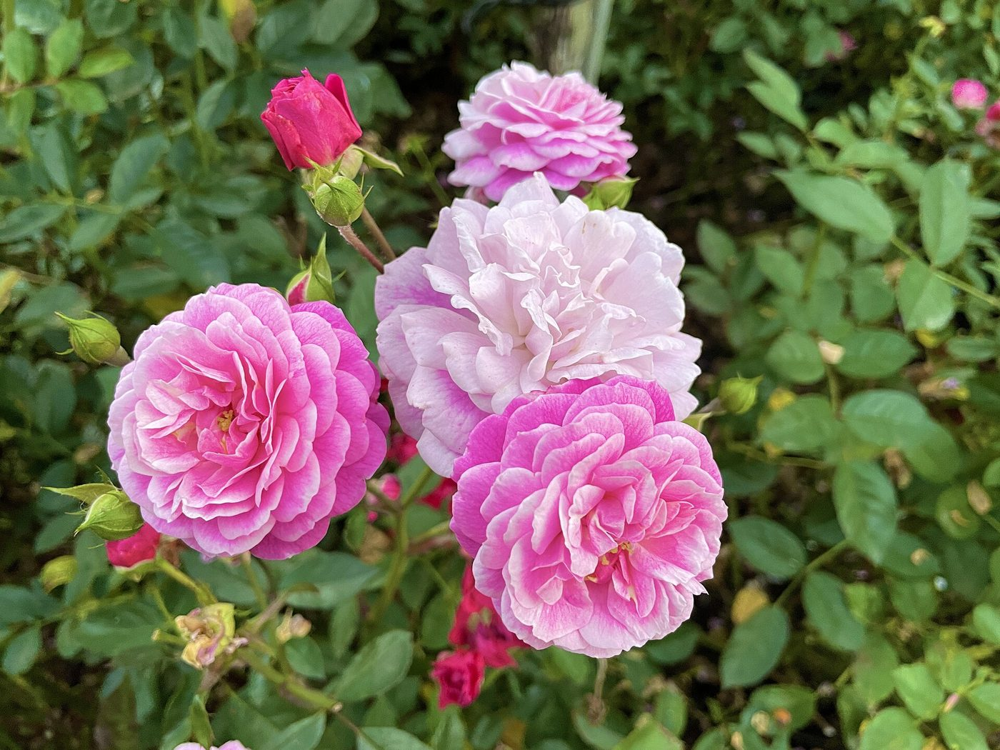
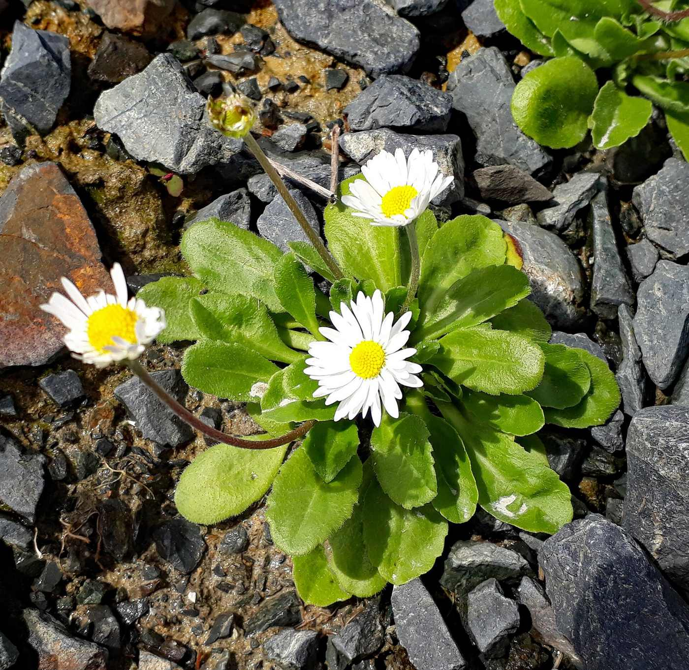
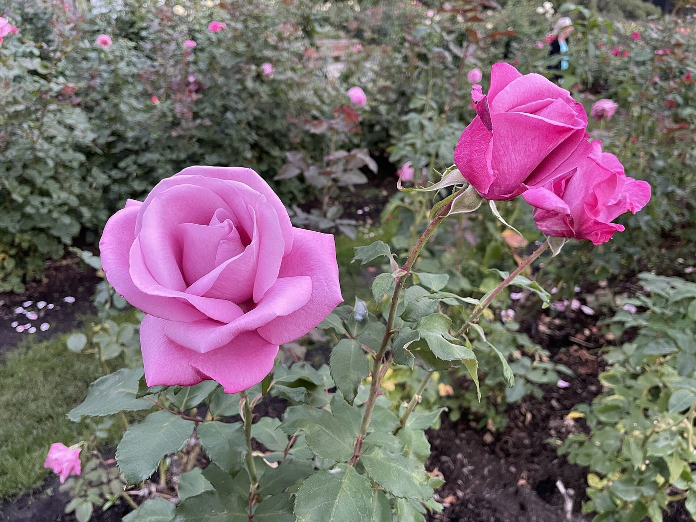
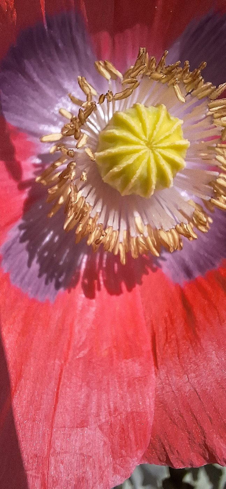
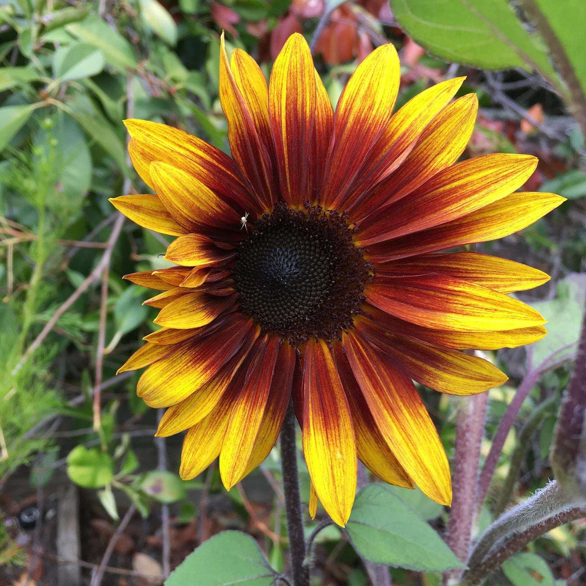
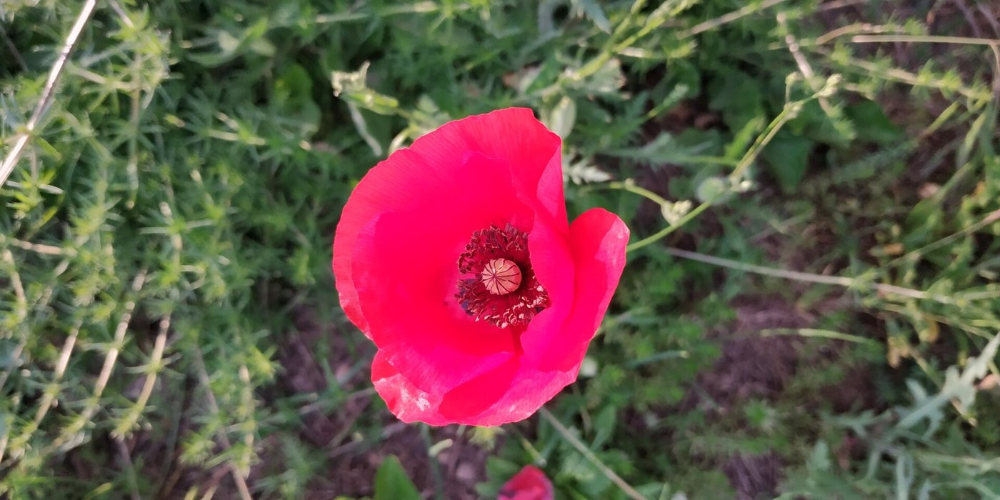

茨城県石岡市・お花屋さんの奥のカフェ
お花の奥の扉を開けると、
その日のシェフの一皿。
花の間を抜けた先にある、日替わりシェフスタイルのカフェ。
お店のこと
お花屋さんの奥に、扉がひとつ。
紹介記事などによると、mucaca no oku cafeは、お洒落なお花屋さん「mucaca」の奥に進んだ先の扉の向こうにあるカフェです。曜日によってメニューが変わる「日替わりシェフスタイル」が特徴と紹介されています。
情報源: Lemon8の紹介投稿
このページの文章のうち、上記の事実以外(見出しの言い回しなど)は制作側の表現です。店名の意味や開店の経緯は確認できていないため記載していません。
花のイメージ
お店の入口にならぶ、季節の花たち。
写真はすべてフリー素材のイメージで、お店の実際の様子・料理ではありません。







メニュー
曜日ごとに変わる、シェフの味。
下の写真は、カフェの雰囲気を伝えるフリー素材です。提供内容そのものではありません。


口コミ(イメージ例)
こんな声が届くカフェに。
以下は制作側が想像して書いた例です。実在のお客様の声ではありません。
イメージ例
お花屋さんの奥にカフェがあると思わず、扉を開けたときに少しわくわくしました。
イメージ例
曜日でメニューが違うので、また別の日に来てみたくなります。
イメージ例
花の香りのする入口から続く、落ち着いた時間でした。
アクセス
ご案内
| 所在地 | 〒315-0001 茨城県石岡市石岡2181-2 |
|---|---|
| 電話 | 準備中 |
| 営業時間 | 準備中 |
| 定休日 | 準備中 |
| @oku_cafe |
営業日・時間は変更されることがあるため、最新情報はInstagramをご確認ください。